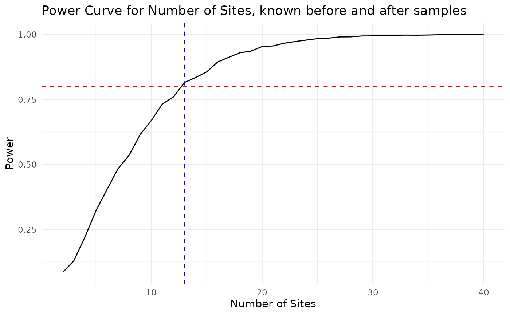
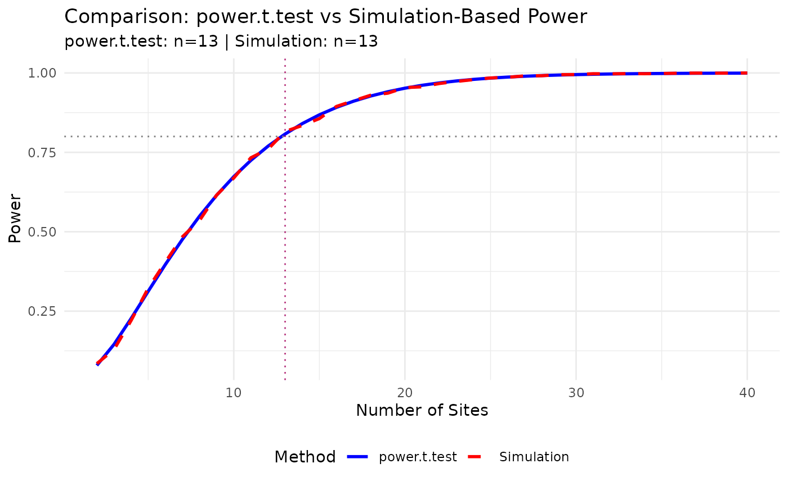
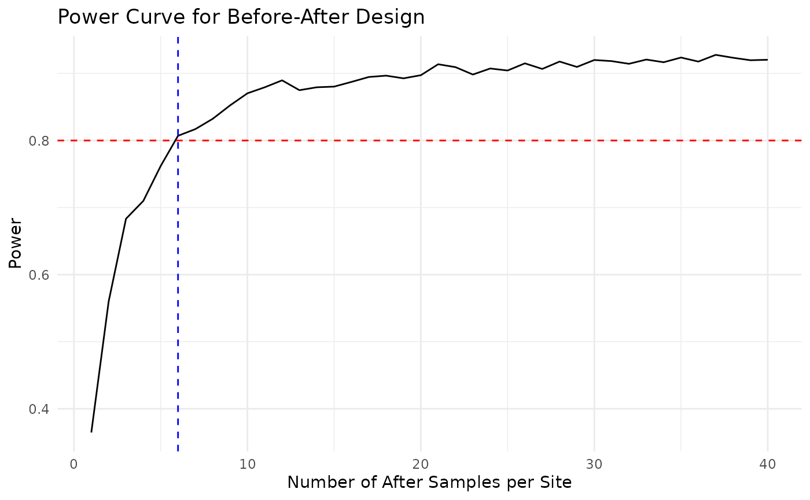
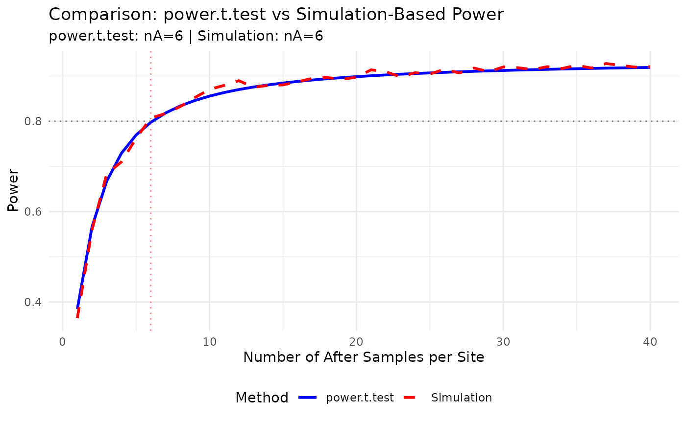

User guide for power after change
Beth Babcock
2026-02-22
UserGuide.RmdThese functions calculate power and sample size for a Before-After t-test with fixed sites, repeated samples per site. Possible questions to ask are:
Given a fixed number of samples per site before and after, and an assumed effect size and variances, (a) how many sites are needed to achieve target power? and (b) what is the power for a given number of sites? This asks how increasing the number of sites would change the ability to detect a future change, after some time has passed to establish a baseline at the new sites.
Given a fixed number of sites, samples per site before, and an assumed effect size and variances, (a) how many samples per site after are needed to achieve target power? or (b) what is the power for a given number of samples per site after? This addresses how long we would have to wait after a change (e.g. a restoration action) to see the change with, for example, annual samples.
Functions are based on Monte Carlo simulation of normal data and using the power.t.test function, to show that they are equivalent.
The functions were generated with the help of ChatGPT and GitHub Copilot (various AI tools) 1/30/2026-2/5/2026.
The following is a simulated data demo. The simulated data is data before the change, and we use this data to get an estimate of the within-site standard deviation needed for planning. The data are simulated with site-to-site variability and within-site variability, using a normal distribution.
library(tidyverse)
theme_set(theme_minimal())
#devtools::install_github("ebabcock/PowerAfterChange")
library(PowerAfterChange) #Library with all the new functionsSimulate some data
set.seed(123) #for reproducibility
S_demo <- 12 #Number of sites
nB_demo <- 5 #Number of before samples per site
sd_within <- 2 #within-site standard deviation
sd_between <- 1 #between-site standard deviation
before_mean <- 10 #overall mean before change
#simulate site to site variability
siteMean <- rnorm(S_demo, mean = before_mean, sd = sd_between)
#Generate baseline data (before change)
baseline_demo <- data.frame(
site = rep(1:S_demo, each = nB_demo)) %>%
mutate(y = rnorm(S_demo * nB_demo, mean = siteMean[site], sd = sd_within))Estimate within-site SD
We need the within-site standard deviation for the power and sample size calculations. Here we estimate it from the baseline data. See getSD_within function in PowerAfterFunctions for the code.
sd_within_hat <-getSD_within(baseline = baseline_demo,
siteVar = "site",
responseVar = "y")
sd_within_hat## [1] 1.671255Planning assumptions
This is the change we want to be able to detect with sufficient power.
delta_target <- 1 #change in the mean we want to detect
sd_delta <- 0.5 #variability in true changes among sites(Question 1) Find minimum sites given before and after number known sample size
In this scenario, we know how many samples we have before and after the change, and want to know how many sites are needed to achieve target power. This is equivalent to a paired t-test power calculation, and we will do it with both a simulation function and power.t.test to show they are equivalent when we calculate the standard deviation of the difference correctly.
site_res <- find_min_sites(nB = nB_demo, nA = 5,
delta = delta_target,
sd_w = sd_within_hat, sd_d = sd_delta,
target_power = 0.8, alpha = 0.05,
S_grid = 2:40, nsim = 3000, seed = 42)
site_res$S_star## [1] 13
# Plot power curve for sites
ggplot(site_res$curve, aes(x = S, y = power)) +
geom_line() +
geom_hline(yintercept = 0.8, linetype = "dashed", color = "red") +
geom_vline(xintercept = site_res$S_star, linetype = "dashed", color = "blue") +
labs(title = "Power Curve for Number of Sites, known before and after samples",
x = "Number of Sites",
y = "Power")
The power curve shows how power increases with more samples after the change. The dashed red line indicates the target power (0.8), and the dashed blue line indicates the minimum number of after samples needed to achieve that power.
Now, we repeat the calculation using the standard power.t.test function for comparison.
The standard deviation of the difference between after and before means per site is calculated as:
This combines: - Within-site variance for after measurements: sd_w^2/nA - Within-site variance for before measurements: sd_w^2/nB - Between-site variance in true changes: sd_d^2
The function getSD_difference makes this calculation.
sd_diff_hat <- getSD_difference(sd_within = sd_within_hat,
nA = 5,
nB = 5,
sd_delta = sd_delta)
sd_diff_hat## [1] 1.169289We can then use power.t.test to find the number of sites needed for the paired t-test.
power_result <- power.t.test(n = NULL,
delta = delta_target,
sd = sd_diff_hat,
sig.level = 0.05,
power = 0.8,
type = "paired",
alternative = "two.sided")
power_result$n #Number of sites needed## [1] 12.78393This matches the result from our simulation function find_min_sites. Here is the power curve.
comparison_df <- data.frame(
n_sites = site_res$curve$S,
power_analytical = find_min_sites_analytical(S_grid = site_res$curve$S,
delta_target = delta_target,
sd_diff = sd_diff_hat),
power_simulation = site_res$curve$power
)
# Plot comparison
ggplot(comparison_df, aes(x = n_sites)) +
geom_line(aes(y = power_analytical, color = "power.t.test"), size = 1) +
geom_line(aes(y = power_simulation, color = "Simulation"), size = 1, linetype = "dashed") +
geom_hline(yintercept = 0.8, linetype = "dotted", color = "gray50") +
geom_vline(xintercept = ceiling(power_result$n), linetype = "dotted", color = "blue", alpha = 0.5) +
geom_vline(xintercept = site_res$S_star, linetype = "dotted", color = "red", alpha = 0.5) +
labs(
title = "Comparison: power.t.test vs Simulation-Based Power",
subtitle = paste0("power.t.test: n=", ceiling(power_result$n),
" | Simulation: n=", site_res$S_star),
x = "Number of Sites",
y = "Power",
color = "Method"
) +
scale_color_manual(values = c("power.t.test" = "blue", "Simulation" = "red")) +
theme(legend.position = "bottom")## Warning: Using `size` aesthetic for lines was deprecated in ggplot2 3.4.0.
## ℹ Please use `linewidth` instead.
## This warning is displayed once per session.
## Call `lifecycle::last_lifecycle_warnings()` to see where this warning was
## generated.
(Question 2) Find minimum n_after
In this scenario, we have a fixed number of sites and samples before the change, and want to know how many samples after the change are needed to achieve target power.The function res_n_after finds the minimum number of samples after the change needed to achieve target power, given the number of sites and samples before the change.
res_n_after <- find_n_after(S = S_demo, nB = nB_demo,
delta = delta_target,
sd_w = sd_within_hat, sd_d = sd_delta,
target_power = 0.8, alpha = 0.05,
n_grid = 1:40, nsim = 3000, seed = 99)
res_n_after$n_star #Number of after samples need for specified power## [1] 6
head(res_n_after$curve)## n_after power
## 1 1 0.3646667
## 2 2 0.5600000
## 3 3 0.6833333
## 4 4 0.7100000
## 5 5 0.7620000
## 6 6 0.8070000
# Plot power curve for number of samples after
ggplot(res_n_after$curve, aes(x = n_after, y = power)) +
geom_line() +
geom_hline(yintercept = 0.8, linetype = "dashed", color = "red") +
geom_vline(xintercept = res_n_after$n_star, linetype = "dashed", color = "blue") +
labs(title = "Power Curve for Before-After Design",
x = "Number of After Samples per Site",
y = "Power")  The power curve shows how power increases with more samples after the change. The dashed red line indicates the target power (0.8), and the dashed blue line indicates the minimum number of after samples needed to achieve that power.
Now, we repeat the calculation using the standard power.t.test function for comparison. The standard deviation of the difference between after and before means per site is calculated as before.
# Calculate power for a range of nA values
nA_grid <- 1:40
power_values <- sapply(nA_grid, function(nA) {
power_for_nA(nA, S = S_demo, nB = nB_demo,
delta = delta_target,
sd_within = sd_within_hat,
sd_delta = sd_delta,
alpha = 0.05)
})
# Create a data frame for plotting
comparison_nA_df <- data.frame(
n_after = nA_grid,
power_analytical = power_values,
power_simulation = res_n_after$curve$power
)
# Plot comparison
ggplot(comparison_nA_df, aes(x = n_after)) +
geom_line(aes(y = power_analytical, color = "power.t.test"),
size = 1) +
geom_line(aes(y = power_simulation, color = "Simulation"),
size = 1, linetype = "dashed") +
geom_hline(yintercept = 0.8, linetype = "dotted", color = "gray50") +
geom_vline(xintercept = ceiling(res_n_after$n_star),
linetype = "dotted", color = "red", alpha = 0.5) +
labs(
title = "Comparison: power.t.test vs Simulation-Based Power",
subtitle = paste0("power.t.test: nA=", ceiling(res_n_after$n_star
), " | Simulation: nA=", res_n_after$n_star),
x = "Number of After Samples per Site",
y = "Power",
color = "Method"
) +
scale_color_manual(values = c("power.t.test" = "blue",
"Simulation" = "red")) +
theme(legend.position = "bottom")
This matches the result from our simulation function find_n_after.
Conclusion
The simulation-based functions produce results that align closely with the analytical solutions from power.t.test when the standard deviation of the difference is calculated correctly. This validates the simulation approach for power and sample size calculations in Before-After designs with fixed sites and repeated samples per site. We can now add biological realism by using functions other than normal for the simulation, and adding more complex designs.